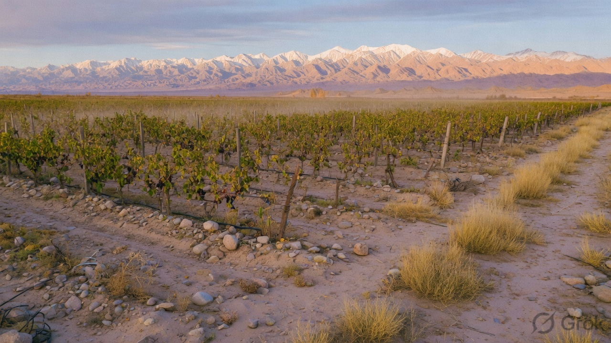
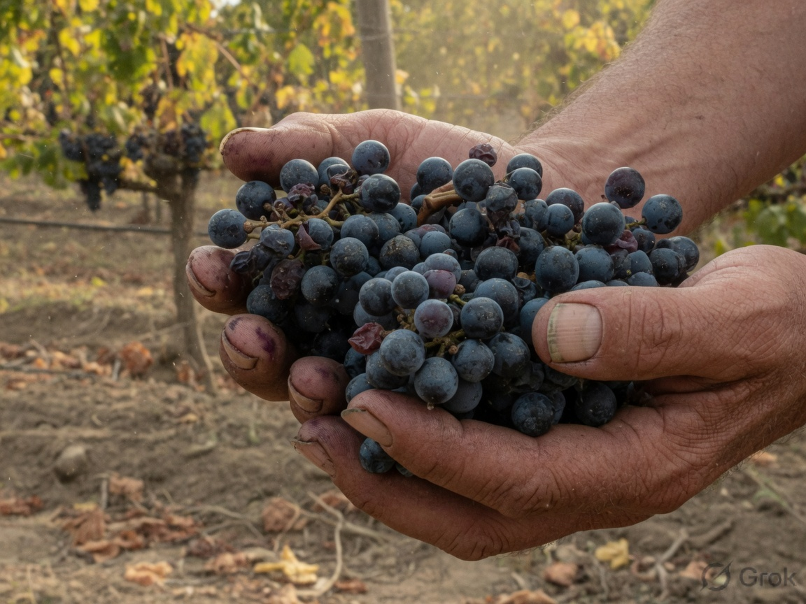
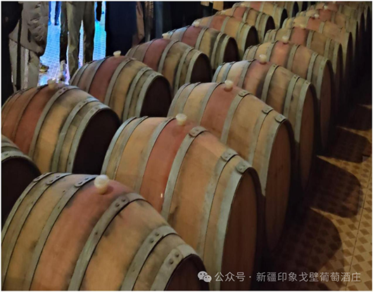

— 〇一 / 关于
我们在曾经的荒滩上种葡萄。戈壁不原谅懒散的农事——这反而有用。
印象戈壁是昌吉的小酒庄：有机种植、自有酒窖，酒里还留着这片地方的热与尘。

昌吉的庄园酒。有机园、自家窖，沙漠的日照与山脚的夜凉，都在酒里。
我们在曾经的荒滩上种葡萄。戈壁不原谅懒散的农事——这反而有用。
印象戈壁是昌吉的小酒庄：有机种植、自有酒窖，酒里还留着这片地方的热与尘。
不是宣言。是季节艰难时，仍然守着的习惯。

昌吉在天山之北。日照长、雨少、夜凉。果子厚实，皮也扛得住。

等的是地块，不是日历。糖、酸、口感都对齐了，才进酒窖。

赤霞珠、梅洛、西拉、马瑟兰需要木桶与瓶中时间。不为了展会提前把年份赶出去。
雨少，病少。有机是气候允许的务实选择——酒也更干净。

草本、胡椒、深色果、真实的单宁。不是软乎乎的营销酒。喜欢结构的人，会很快明白。
「戈壁学会酿酒的地方。」— 酒庄一句话